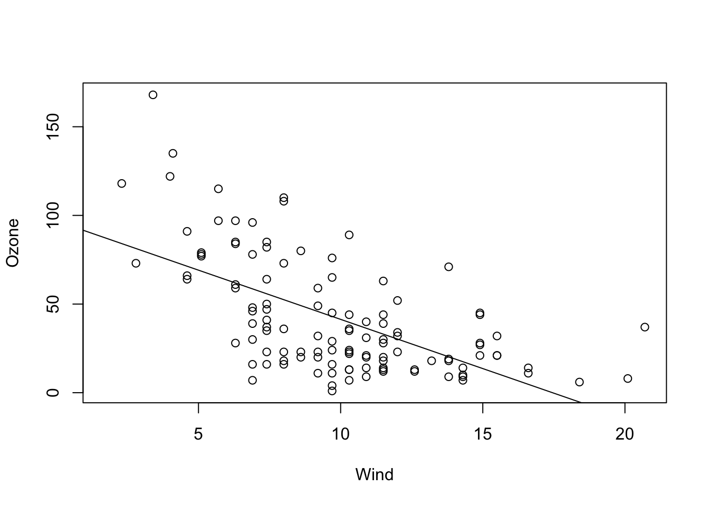
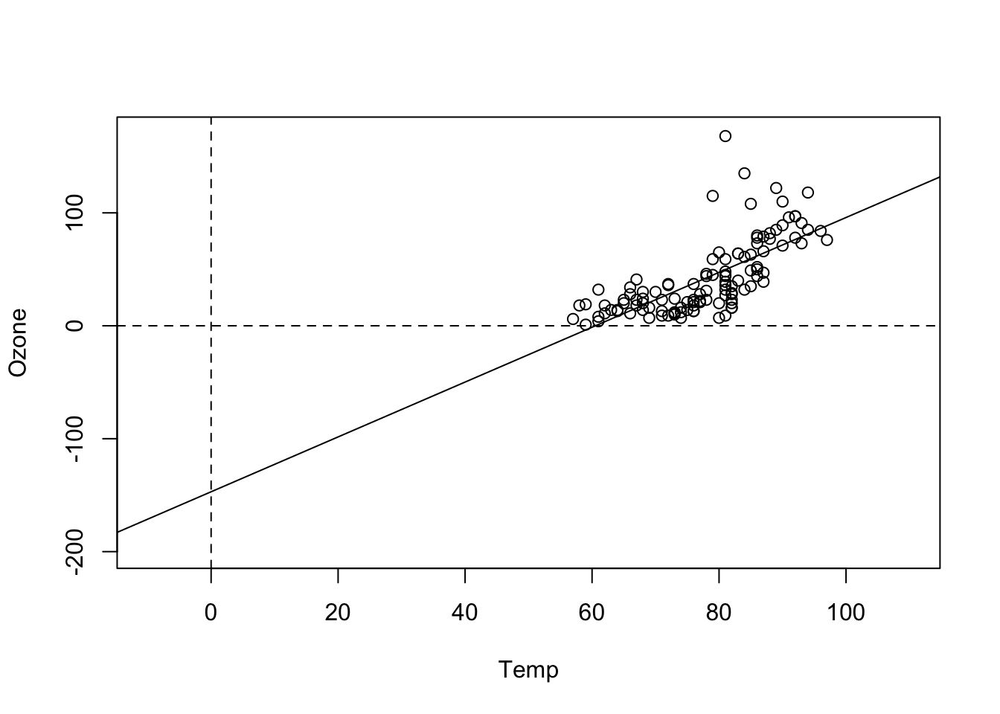
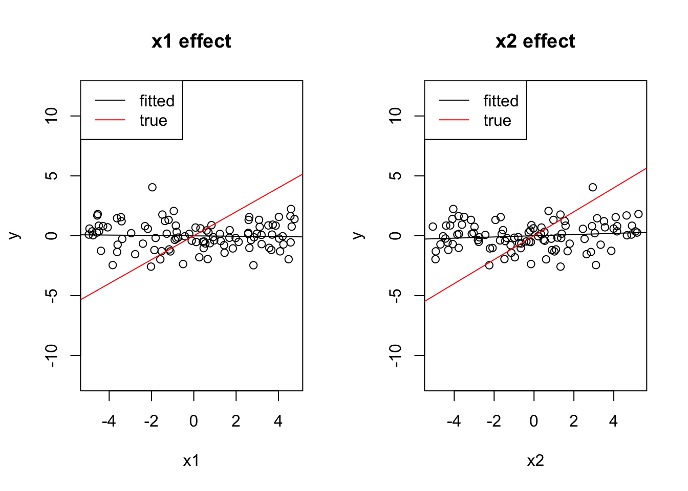
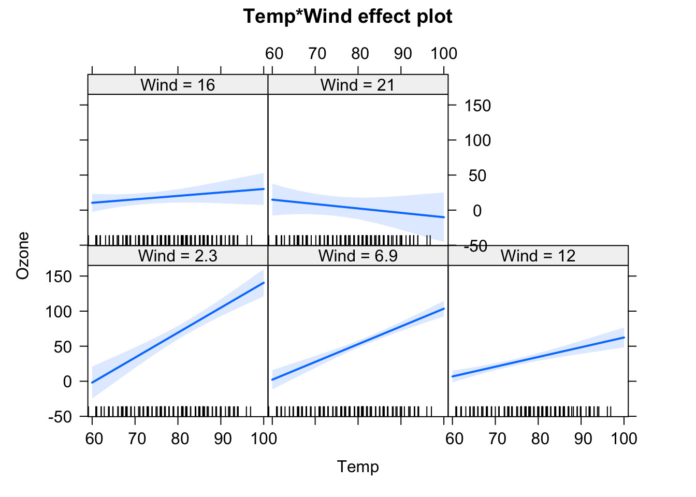

3 Understanding Linear Regression
This chapter is a reminder about the basic regression model functions in R.
Here a warm-up exercise: Fit the regression:
summary(lm(Ozone ~ Wind, data = airquality))And answer / discuss with your partner the following questions: What is the effect of Wind on Ozone? How important is Wind to explain Ozone? Next, run the following regressions:
summary(lm(Ozone ~ Wind + Temp, data = airquality))
summary(lm(Ozone ~ Wind * Temp, data = airquality))Why does the effect of Wind on Ozone change so much as we change the formula? What is the “true” or correct estimate of the effect of Wind on Ozone? At the end of this chapter, you should be able to answer all these questions!
3.1 Simple Linear Regression
OK, after our warm-up, let’s start with the basics. We will again used the data set airquality, which is built-in in R. If you don’t know the data set, have a look at the description via
?airqualityand at the variables via
str(airquality)To get started, let’s say we want to examine the relationship between Ozone and Wind. Let’s visualize this first:
plot(Ozone ~ Wind, data = airquality)OK, I would say there is some dependency there. To quantify this numerically, you could also run
cor(airquality$Ozone, airquality$Wind, use = "complete.obs")to get the (Pearson) correlation, which is negative: -0.6015465.
What we want to do now is fitting regression models through the data with the lm() function of R. The function name lm is short for “linear model”. However, remember from the basic course: This model is not called linear because we necessarily fit a linear function. It’s called linear because we express the response (in our case Wind) as a polynomial of the predictor(s). That means, the predictors have linear coefficients but they might themselves be for example quadratic or sinus terms. So \(y = \operatorname{f}(x) + \mathcal{N}(0, \sigma)\), where \(\operatorname{f}\) is a polynomial, e.g. \({a}_{0} + {a}_{1} \cdot x + {a}_{2} \cdot {x}^{2}\), and \(\mathcal{N}(0, \sigma)\) means that we assume the data scattering as a normal (Gaussian) distribution with unknown standard deviation \(\sigma\) around \(\operatorname{f}(x)\). The model is called linear because when estimating the unknown parameters (we call them “effects”) of the polynomial, we will see that they are all affecting the predictions linearly, and can thus be solved as a system of linear equations.
3.1.1 Fitting and Interpreting the Regression
For fitting a line through this data, we have 3 options:
- Fit a horizontal line (intercept only).
- Fit only the slope, but assume the line goes through the origin (0, 0).
- Fit slope and intercept.
Option 3 is the most common case, but we will discuss all 3 options here.
Intercept Only Model
The following code fits an intercept only model, meaning that we assume the line is perfectly flat, and we only adjust it’s height (the intercept).
fit = lm(Ozone ~ 1, data = airquality)We can visualize the result via
plot(Ozone ~ Wind, data = airquality)
abline(fit)and get a summary of the fitted regression coefficients via
summary(fit)##
## Call:
## lm(formula = Ozone ~ 1, data = airquality)
##
## Residuals:
## Min 1Q Median 3Q Max
## -41.13 -24.13 -10.63 21.12 125.87
##
## Coefficients:
## Estimate Std. Error t value Pr(>|t|)
## (Intercept) 42.129 3.063 13.76 <2e-16 ***
## ---
## Signif. codes: 0 '***' 0.001 '**' 0.01 '*' 0.05 '.' 0.1 ' ' 1
##
## Residual standard error: 32.99 on 115 degrees of freedom
## (37 observations deleted due to missingness)We will talk more about this summary later, but for the moment, let’s look only at the coefficients.
This tells us that
- We estimate the mean Ozone (our line) to be at \(42.12 \pm 3.1\) units.
- The value is significantly different from zero (the t-test always tests \({H}_{0}\): “The estimate is zero”).
By the way, the value for the intercept is identical to mean(airquality$Ozone, na.rm = T). This is no accident, as the mean is the maximum likelihood estimation for the mean of the normal distribution.
Slope Only Model
Although rarely sensible, you can also fit a model with just a slope. This only makes sense if you are sure that the line must go through the origin (0, 0) for physical or biological reasons.
fit = lm(Ozone ~ Wind + 0, data = airquality)
summary(fit)
# Alternative for removing the linear term:
fit = lm(Ozone ~ Wind - 1, data = airquality)
summary(fit)In the results, you can see that we estimate a positive slope, in contradiction to our visual assessment that the data seems negatively correlated. This is because we are forcing the regression line to go through the origin (0, 0).
##
## Call:
## lm(formula = Ozone ~ Wind - 1, data = airquality)
##
## Residuals:
## Min 1Q Median 3Q Max
## -55.11 -19.34 -2.45 35.71 157.32
##
## Coefficients:
## Estimate Std. Error t value Pr(>|t|)
## Wind 3.1398 0.3742 8.391 1.4e-13 ***
## ---
## Signif. codes: 0 '***' 0.001 '**' 0.01 '*' 0.05 '.' 0.1 ' ' 1
##
## Residual standard error: 42.25 on 115 degrees of freedom
## (37 observations deleted due to missingness)
## Multiple R-squared: 0.3798, Adjusted R-squared: 0.3744
## F-statistic: 70.41 on 1 and 115 DF, p-value: 1.404e-13plot(Ozone ~ Wind, data = airquality)
abline(fit)
Slope and Intercept
The most common case will be a model with slope and intercept which is probably corresponds most with our visual assessment.
fit = lm(Ozone ~ Wind, data = airquality)
plot(Ozone ~ Wind, data = airquality)
abline(fit)
summary(fit)##
## Call:
## lm(formula = Ozone ~ Wind, data = airquality)
##
## Residuals:
## Min 1Q Median 3Q Max
## -51.572 -18.854 -4.868 15.234 90.000
##
## Coefficients:
## Estimate Std. Error t value Pr(>|t|)
## (Intercept) 96.8729 7.2387 13.38 < 2e-16 ***
## Wind -5.5509 0.6904 -8.04 9.27e-13 ***
## ---
## Signif. codes: 0 '***' 0.001 '**' 0.01 '*' 0.05 '.' 0.1 ' ' 1
##
## Residual standard error: 26.47 on 114 degrees of freedom
## (37 observations deleted due to missingness)
## Multiple R-squared: 0.3619, Adjusted R-squared: 0.3563
## F-statistic: 64.64 on 1 and 114 DF, p-value: 9.272e-13This time, we want to look in full at the regression table. Recall that:
- “Call” repeats the regression formula.
- “Residuals” gives you an indication about how far the observed data scatters around the fitted regression line / function.
- The regression table (starting with “Coefficients”) provides the estimated parameters, one row for each fitted parameter. The first column is the estimate, the second (standard error) is the 0.63 confidence interval (for 0.95 confidence interval multiply with 1.96), and the fourth column is the p-value for a two-sided test with \({H}_{0}\): “Estimate is zero”. The t-value is used for calculation of the p-value and can usually be ignored.
- The last section of the summary provides information about the model fit.
- Residual error = Standard deviation of the residuals,
- 114 df = Degrees of freedom = Observed - fitted parameters.
- R-squared \(\left({R}^{2}\right)\) = How much of the signal, respective variance is explained by the model, calculated by \(\displaystyle 1 - \frac{\text{residual variance}}{\text{total variance}}\).
- Adjusted R-squared = Adjusted for model complexity.
- F-test = Test against intercept only model, i.e. is the fitted model significantly better than the intercept only model (most relevant for models with > 1 predictor).
Discussion
What is the meaning of “An effect is not significant”?
Solution
You should NOT say that the effect is zero, or that the null hypothesis has been accepted. Official language is “there is no significant evidence for an effect(p = XXX)”. If we would like to assess what that means, some people do a post-hoc power analysis (which effect size could have been estimated), but better is typically just to discuss the confidence interval, i.e. look at the confidence interval and say: if there is an effect, we are relatively certain that it is smaller than X, given the confidence interval of XYZ.
Discussion
Is an effect with three *** more significant / certain than an effect with one *?
Solution
Many people view it that way, and some even write “highly significant” for *** . It is probably true that we should have a slightly higher confidence in a very small p-value, but strictly speaking, however, there is only significant, or not significant. Interpreting the p-value as a measure of certainty is a slight misinterpretation. Again, if we want to say how certain we are about the effect, it is better to look again at the confidence interval, i.e. the standard error and use this to discuss the precision of the estimate (small confidence interval / standard error = high precision / certainty).
Task
Fit simple (univariate) linear regression models for the other two numeric variables (Temp and Solar.R) and interpret the results with your partner.
Solution
fit = lm(Ozone ~ Temp, data = airquality)
summary(fit)##
## Call:
## lm(formula = Ozone ~ Temp, data = airquality)
##
## Residuals:
## Min 1Q Median 3Q Max
## -40.729 -17.409 -0.587 11.306 118.271
##
## Coefficients:
## Estimate Std. Error t value Pr(>|t|)
## (Intercept) -146.9955 18.2872 -8.038 9.37e-13 ***
## Temp 2.4287 0.2331 10.418 < 2e-16 ***
## ---
## Signif. codes: 0 '***' 0.001 '**' 0.01 '*' 0.05 '.' 0.1 ' ' 1
##
## Residual standard error: 23.71 on 114 degrees of freedom
## (37 observations deleted due to missingness)
## Multiple R-squared: 0.4877, Adjusted R-squared: 0.4832
## F-statistic: 108.5 on 1 and 114 DF, p-value: < 2.2e-16plot(Ozone ~ Temp, data = airquality)
abline(fit)
Temperature seems to have a positive effect of Ozone and this effect is significant. The intercept (value for Ozone at Temp = 0) is negative and also significant. This model explains nearly 50% of the variance of the given data. This holds even for the complexity adjusted \({R}^{2}\) measure. 37 observations have missing data and are omitted. Compared to the model with only an intercept, this model is significantly different.
fit = lm(Ozone ~ Solar.R, data = airquality)
summary(fit)##
## Call:
## lm(formula = Ozone ~ Solar.R, data = airquality)
##
## Residuals:
## Min 1Q Median 3Q Max
## -48.292 -21.361 -8.864 16.373 119.136
##
## Coefficients:
## Estimate Std. Error t value Pr(>|t|)
## (Intercept) 18.59873 6.74790 2.756 0.006856 **
## Solar.R 0.12717 0.03278 3.880 0.000179 ***
## ---
## Signif. codes: 0 '***' 0.001 '**' 0.01 '*' 0.05 '.' 0.1 ' ' 1
##
## Residual standard error: 31.33 on 109 degrees of freedom
## (42 observations deleted due to missingness)
## Multiple R-squared: 0.1213, Adjusted R-squared: 0.1133
## F-statistic: 15.05 on 1 and 109 DF, p-value: 0.0001793plot(Ozone ~ Solar.R, data = airquality)
abline(fit)Solar.R seems to have a positive effect of Ozone and this effect is significant. The intercept (value for Ozone at Solar.R = 0) is positive and also significant. This model explains slightly more than 10% of the variance of the given data. This holds even for the complexity adjusted \({R}^{2}\) measure. 42 observations have missing data and are omitted. Thus this model has not the power of the previous one. Compared to the model with only an intercept, this model is significantly different.
3.1.2 Centering and Scaling of Predictors
In the last model
fit = lm(Ozone ~ Wind, data = airquality)
summary(fit)we saw an intercept of 96 for the Wind parameter. Per definition, the intercept is the predicted value for \(y\) (Ozone) at \(x\) (Wind) = 0. It’s fine to report this, as long as we are interested in this value. However, there are certain situations where the value at predictor = 0 is not particularly interesting. Let’s look at the regression for Temp, for example:
fit = lm(Ozone ~ Temp, data = airquality)
summary(fit)##
## Call:
## lm(formula = Ozone ~ Temp, data = airquality)
##
## Residuals:
## Min 1Q Median 3Q Max
## -40.729 -17.409 -0.587 11.306 118.271
##
## Coefficients:
## Estimate Std. Error t value Pr(>|t|)
## (Intercept) -146.9955 18.2872 -8.038 9.37e-13 ***
## Temp 2.4287 0.2331 10.418 < 2e-16 ***
## ---
## Signif. codes: 0 '***' 0.001 '**' 0.01 '*' 0.05 '.' 0.1 ' ' 1
##
## Residual standard error: 23.71 on 114 degrees of freedom
## (37 observations deleted due to missingness)
## Multiple R-squared: 0.4877, Adjusted R-squared: 0.4832
## F-statistic: 108.5 on 1 and 114 DF, p-value: < 2.2e-16Here, the intercept is -146, which doesn’t make much sense for an ozone concentration, which should be positive. We can see the reason when we plot the results:
plot(Ozone ~ Temp, data = airquality, xlim = c(-10, 110), ylim = c(-200, 170))
abline(fit)
abline(h = 0, lty = 2)
abline(v = 0, lty = 2)
That shows us that the value 0 is far outside of the set of our observed values for Temp, which is measured in Fahrenheit. Thus, we are extrapolating the Ozone far beyond the observed data. What we can do to avoid this is to simply re-define the x-Axis, by subtracting the mean, which is called centering:
airquality$cTemp = airquality$Temp - mean(airquality$Temp)Alternatively, you can center with the build-in R command scale
airquality$cTemp = scale(airquality$Temp, center = T, scale = F)Fitting the model with the centered variable
fit = lm(Ozone ~ cTemp, data = airquality)
summary(fit)##
## Call:
## lm(formula = Ozone ~ cTemp, data = airquality)
##
## Residuals:
## Min 1Q Median 3Q Max
## -40.729 -17.409 -0.587 11.306 118.271
##
## Coefficients:
## Estimate Std. Error t value Pr(>|t|)
## (Intercept) 42.1576 2.2018 19.15 <2e-16 ***
## cTemp 2.4287 0.2331 10.42 <2e-16 ***
## ---
## Signif. codes: 0 '***' 0.001 '**' 0.01 '*' 0.05 '.' 0.1 ' ' 1
##
## Residual standard error: 23.71 on 114 degrees of freedom
## (37 observations deleted due to missingness)
## Multiple R-squared: 0.4877, Adjusted R-squared: 0.4832
## F-statistic: 108.5 on 1 and 114 DF, p-value: < 2.2e-16produces a more interpretable value for the intercept. We can see this also visual if we plot the results, i.e. the Ozone concentration at the mean observed temperature.
plot(Ozone ~ cTemp, data = airquality)
abline(fit)
abline(v = 0, lty = 2)
When we center, the intercept of the centered variable can be interpreted as the Ozone concentrate at the mean temperature. This value will also typically be very similar to the grand mean mean(airquality$Ozone).
Another very common transformation is to divide the x axis by its standard deviation. This is called scaling.
airquality$sTemp = airquality$Temp / sd(airquality$Temp)Fitting the model with the scaled variable mainly changes the estimate of the regression slope
fit = lm(Ozone ~ sTemp, data = airquality)
summary(fit)##
## Call:
## lm(formula = Ozone ~ sTemp, data = airquality)
##
## Residuals:
## Min 1Q Median 3Q Max
## -40.729 -17.409 -0.587 11.306 118.271
##
## Coefficients:
## Estimate Std. Error t value Pr(>|t|)
## (Intercept) -146.995 18.287 -8.038 9.37e-13 ***
## sTemp 22.988 2.207 10.418 < 2e-16 ***
## ---
## Signif. codes: 0 '***' 0.001 '**' 0.01 '*' 0.05 '.' 0.1 ' ' 1
##
## Residual standard error: 23.71 on 114 degrees of freedom
## (37 observations deleted due to missingness)
## Multiple R-squared: 0.4877, Adjusted R-squared: 0.4832
## F-statistic: 108.5 on 1 and 114 DF, p-value: < 2.2e-16which is now around 23 (before it was 2.4). The difference in interpretation is the following: for the unscaled variable, we estimate the effect of 1 unit change of temperature on Ozone. For the scaled variable, we estimate the effect of a temperature change of 1 sd of the temperature values, so we can interpret this as an Ozone effect scaled to typical temperature differences in the data.
Task
Have a look at the results below, where we apply linear transformations on a variable (linear = either subtract / add something to the variable, or multiply / divide the variable by a certain value). How does the transformation change the regression’s estimates?
Solution
Original model
fit = lm(Ozone ~ Temp, data = airquality)
summary(fit)##
## Call:
## lm(formula = Ozone ~ Temp, data = airquality)
##
## Residuals:
## Min 1Q Median 3Q Max
## -40.729 -17.409 -0.587 11.306 118.271
##
## Coefficients:
## Estimate Std. Error t value Pr(>|t|)
## (Intercept) -146.9955 18.2872 -8.038 9.37e-13 ***
## Temp 2.4287 0.2331 10.418 < 2e-16 ***
## ---
## Signif. codes: 0 '***' 0.001 '**' 0.01 '*' 0.05 '.' 0.1 ' ' 1
##
## Residual standard error: 23.71 on 114 degrees of freedom
## (37 observations deleted due to missingness)
## Multiple R-squared: 0.4877, Adjusted R-squared: 0.4832
## F-statistic: 108.5 on 1 and 114 DF, p-value: < 2.2e-16plot(Ozone ~ Temp, data = airquality, main = "Standard")
abline(fit)Additive transformation change the intercept value, all p-values, CIs stay the same (except for the intercept, as the test changes)
airquality$TempAdd = airquality$Temp + 10
fit = lm(Ozone ~ TempAdd, data = airquality)
summary(fit)##
## Call:
## lm(formula = Ozone ~ TempAdd, data = airquality)
##
## Residuals:
## Min 1Q Median 3Q Max
## -40.729 -17.409 -0.587 11.306 118.271
##
## Coefficients:
## Estimate Std. Error t value Pr(>|t|)
## (Intercept) -171.2825 20.6034 -8.313 2.22e-13 ***
## TempAdd 2.4287 0.2331 10.418 < 2e-16 ***
## ---
## Signif. codes: 0 '***' 0.001 '**' 0.01 '*' 0.05 '.' 0.1 ' ' 1
##
## Residual standard error: 23.71 on 114 degrees of freedom
## (37 observations deleted due to missingness)
## Multiple R-squared: 0.4877, Adjusted R-squared: 0.4832
## F-statistic: 108.5 on 1 and 114 DF, p-value: < 2.2e-16plot(Ozone ~ TempAdd, data = airquality, main = "Addition + 10")
abline(fit)
Multiplicative transformations change the slope value, p-values and relative CIs for intercept and slope stay the same.
airquality$TempMult = airquality$Temp * 10
fit = lm(Ozone ~ TempMult, data = airquality)
summary(fit)##
## Call:
## lm(formula = Ozone ~ TempMult, data = airquality)
##
## Residuals:
## Min 1Q Median 3Q Max
## -40.729 -17.409 -0.587 11.306 118.271
##
## Coefficients:
## Estimate Std. Error t value Pr(>|t|)
## (Intercept) -146.99549 18.28717 -8.038 9.37e-13 ***
## TempMult 0.24287 0.02331 10.418 < 2e-16 ***
## ---
## Signif. codes: 0 '***' 0.001 '**' 0.01 '*' 0.05 '.' 0.1 ' ' 1
##
## Residual standard error: 23.71 on 114 degrees of freedom
## (37 observations deleted due to missingness)
## Multiple R-squared: 0.4877, Adjusted R-squared: 0.4832
## F-statistic: 108.5 on 1 and 114 DF, p-value: < 2.2e-16plot(Ozone ~ TempMult, data = airquality, main = "Multiplication * 10")
abline(fit)Combinations of both have both effects together
airquality$TempMix = airquality$Temp * 0.1 - 10
fit = lm(Ozone ~ TempMix, data = airquality)
summary(fit)##
## Call:
## lm(formula = Ozone ~ TempMix, data = airquality)
##
## Residuals:
## Min 1Q Median 3Q Max
## -40.729 -17.409 -0.587 11.306 118.271
##
## Coefficients:
## Estimate Std. Error t value Pr(>|t|)
## (Intercept) 95.875 5.609 17.09 <2e-16 ***
## TempMix 24.287 2.331 10.42 <2e-16 ***
## ---
## Signif. codes: 0 '***' 0.001 '**' 0.01 '*' 0.05 '.' 0.1 ' ' 1
##
## Residual standard error: 23.71 on 114 degrees of freedom
## (37 observations deleted due to missingness)
## Multiple R-squared: 0.4877, Adjusted R-squared: 0.4832
## F-statistic: 108.5 on 1 and 114 DF, p-value: < 2.2e-16plot(Ozone ~ TempMix, data = airquality, main = "Mixed")
abline(fit)
Pro Task
Look at the centered and uncentered regression models
fit1 = lm(Ozone ~ Temp, data = airquality)
summary(fit1)##
## Call:
## lm(formula = Ozone ~ Temp, data = airquality)
##
## Residuals:
## Min 1Q Median 3Q Max
## -40.729 -17.409 -0.587 11.306 118.271
##
## Coefficients:
## Estimate Std. Error t value Pr(>|t|)
## (Intercept) -146.9955 18.2872 -8.038 9.37e-13 ***
## Temp 2.4287 0.2331 10.418 < 2e-16 ***
## ---
## Signif. codes: 0 '***' 0.001 '**' 0.01 '*' 0.05 '.' 0.1 ' ' 1
##
## Residual standard error: 23.71 on 114 degrees of freedom
## (37 observations deleted due to missingness)
## Multiple R-squared: 0.4877, Adjusted R-squared: 0.4832
## F-statistic: 108.5 on 1 and 114 DF, p-value: < 2.2e-16fit2 = lm(Ozone ~ cTemp, data = airquality)
summary(fit2)##
## Call:
## lm(formula = Ozone ~ cTemp, data = airquality)
##
## Residuals:
## Min 1Q Median 3Q Max
## -40.729 -17.409 -0.587 11.306 118.271
##
## Coefficients:
## Estimate Std. Error t value Pr(>|t|)
## (Intercept) 42.1576 2.2018 19.15 <2e-16 ***
## cTemp 2.4287 0.2331 10.42 <2e-16 ***
## ---
## Signif. codes: 0 '***' 0.001 '**' 0.01 '*' 0.05 '.' 0.1 ' ' 1
##
## Residual standard error: 23.71 on 114 degrees of freedom
## (37 observations deleted due to missingness)
## Multiple R-squared: 0.4877, Adjusted R-squared: 0.4832
## F-statistic: 108.5 on 1 and 114 DF, p-value: < 2.2e-16Why do the confidence intervals (Std. Error) on the intercept in the two models (centered and uncentered) differ? To get an idea, look at the effect plots (library effects) for the model. You can also run compare vcov(fit) (calculates variance-covariance matrix) for both models.
Solution
library(effects)
preList = list(Temp = seq(-10, 110, 1))
plot(effect("Temp", fit1, xlevels = preList), main = "Standard")preList = list(cTemp = seq(-10, 110, 1))
plot(effect("cTemp", fit2, xlevels = preList), main = "Centered")
vcov(fit1)## (Intercept) Temp
## (Intercept) 334.420718 -4.23230774
## Temp -4.232308 0.05435046vcov(fit2)## (Intercept) cTemp
## (Intercept) 4.848002921 0.000633905
## cTemp 0.000633905 0.054350459Solution: both centered and uncentered inherently fit the same model, but uncertainty of the intercept for the uncentered model is higher, because this is wide outside the data area, thus we are extrapolating.
Task
3.1.3 Residual Checks
So far, we fitted a regression model, but we didn’t check if the model assumptions fit to the data. Actually, in quite a few examples above we actually saw quite bad fits. For example, let’s take the slope only model lm(Ozone ~ Wind - 1, data = airquality), where we assumed that the regression line should go through (0, 0). Maybe we have good reasons to think that this should be the case biologically, but our data seem to suggest a different behavior.
Wht about the slope and intercept model? Also here, if we plot the predicitons, it seems the model systematically underpredicts Ozone for low Wind, and overpredicts for high Wind.
fit = lm(Ozone ~ cTemp, data = airquality)
plot(Ozone ~ cTemp, data = airquality)
abline(fit)
We can see this a bit better if we use the effects.{R} package, which we will use from now on for doing result plots for regression models.
library(effects)
plot(allEffects(fit, partial.residuals = T))## Warning in Analyze.model(focal.predictors, mod, xlevels, default.levels, : the
## predictor cTemp is a one-column matrix that was converted to a vector
Here, the blue line is the fitted model (with confidence interval in light blue), purple circles are the data, and the purple line is a nonparametric fit to the data. What we see highlighted here is that the data seems to follow a completely different curve than the fitted model.
The conclusion here would be: The model we are fitting does not fit to the data, we should not interpret its outputs, but rather say that we reject it, it’s the wrong model, we have to search for a more appropriate description of the data.
Let’s look at the same plot for the following model:
fit = lm(Ozone ~ Wind + Temp, data = airquality)
plot(allEffects(fit, partial.residuals = T))This looks already better, but there seems to be still a bit of a pattern regarding the scattering of the observed data around the regression line. We can get the difference between model and observations via residuals(fit), and we could plot them against the model predictions (which can be obtained via the predict function) via
plot(residuals(fit) ~ predict(fit))
abline(h = 0)
Remember: The model assumes that the data scatters with a homogenous normal distribution around the regression predictions (which is the 0 line here). What seems to happen, however, is that the scatter increases towards higher predictions, and there also seems to be a tendency towards underprediction at the high and low end.
To better analyse these residuals (and potential problems), R offers a function for residual plots. It produces 4 plots. I think it’s most convenient plotting them all into one figure, via
par(mfrow = c(2, 2))which produces a figure with 2 x 2 = 4 panels.
par(mfrow = c(2, 2))
plot(fit)
Interpretation:
- Residuals vs Fitted: Shows misfits and wrong functional form. Scattering should be uniformly distributed.
- Normal Q-Q: Checks if residuals follow an overall normal distribution. Bullets should lie on the line in the middle of the plot and may scatter a little bit at the ends.
- Scale - Location: Checks for heteroskedasticity. Does the variance change with predictions/changing values? Scattering should be uniformly distributed.
- Residuals vs Leverage: How much impact do outliers have on the regression? Data points with high leverage should not have high residuals and vice versa. Bad points lie in the upper right or in the lower right corner. This is measured via the Cook’s distance. Distances higher than 0.5 indicate candidates for relevant outliers or strange effects.
Important: Residuals are always getting better for more complex models. They should therefore NOT solely be used for model selection. Select your model structure in a different way, residual checks are just for doing a final check to see if the fitted model makes sense.
Generally: If you want to do model selection, control for model complexity. The more complex the model, the higher the cost related to the increase of accuracy.
Task
Modify the formula to get (as far as possible) an acceptable fit to the data. Consider the following options:
fit = lm(Ozone ~ Wind, data = airquality) # Intercept + slope.
fit = lm(Ozone ~ 1, data = airquality) # Only intercept.
fit = lm(Ozone ~ Wind - 1 , data = airquality) # Only slope.
fit = lm(Ozone ~ log(Wind), data = airquality) # Predictor variables can be transformed.
fit = lm(Ozone^0.5 ~ Wind, data = airquality) # Output variables can also be transformed.
fit = lm(Ozone ~ Wind + I(Wind^2), data = airquality) # Mathematical functions with I() command.
library(MASS)
fit = lm(Ozone ~ Wind, data = airquality)
# Calculates optimal transformation for Ozone^lambda to achieve residuals as normally distributed as possible.
boxcox(fit)
Annotation: In the picture above, you can see, that the 95% confidence interval of the best \(\lambda\) lies approximately in \([0.15, 0.5]\).
Solution
Possible solution, adding a quadratic predictor and chosing a power of 0.35 transformation based on the boxcox function:
fit1 = lm(Ozone^0.35 ~ Wind + I(Wind^2), data = airquality)
plot(allEffects(fit1, partial.residuals = T), selection = 1)You could get even better fit by adding more and more predictors, as we will discuss on the section on model selection, this model probably overfits:
fit2 = lm(Ozone^0.35 ~ Wind + I(Wind^2) + I(Wind^3) + I(Wind^4) + I(Wind^5) +
I(Wind^6) + I(Wind^7) + I(Wind^8), data = airquality)
plot(allEffects(fit2, partial.residuals = T), selection = 1)We can see this by looking at common model selection indicators (again, more in the section on model selection). AIC comparison (lower = better)
AIC(fit1)## [1] 270.2059AIC(fit2) ## [1] 274.7512Likelihood ratio test (is there evidence for the more complex model?)
anova(fit1, fit2)## Analysis of Variance Table
##
## Model 1: Ozone^0.35 ~ Wind + I(Wind^2)
## Model 2: Ozone^0.35 ~ Wind + I(Wind^2) + I(Wind^3) + I(Wind^4) + I(Wind^5) +
## I(Wind^6) + I(Wind^7) + I(Wind^8)
## Res.Df RSS Df Sum of Sq F Pr(>F)
## 1 113 65.112
## 2 107 61.059 6 4.0528 1.1837 0.32053.1.4 Categorical Predictors
The lm() function can handle both numerical and categorical variables. To understand what happens if the predictor is categorical, we’ll use another data set here, PlantGrowth (type ?PlantGrowth or F1 help if you want details). We visualize the data via:
boxplot(weight ~ group, data = PlantGrowth)
A basic lm()
Let’s fit an lm() now with the categorical explanatory variable group. They syntax is the same as before:
fit = lm(weight ~ group, data = PlantGrowth)
summary(fit)##
## Call:
## lm(formula = weight ~ group, data = PlantGrowth)
##
## Residuals:
## Min 1Q Median 3Q Max
## -1.0710 -0.4180 -0.0060 0.2627 1.3690
##
## Coefficients:
## Estimate Std. Error t value Pr(>|t|)
## (Intercept) 5.0320 0.1971 25.527 <2e-16 ***
## grouptrt1 -0.3710 0.2788 -1.331 0.1944
## grouptrt2 0.4940 0.2788 1.772 0.0877 .
## ---
## Signif. codes: 0 '***' 0.001 '**' 0.01 '*' 0.05 '.' 0.1 ' ' 1
##
## Residual standard error: 0.6234 on 27 degrees of freedom
## Multiple R-squared: 0.2641, Adjusted R-squared: 0.2096
## F-statistic: 4.846 on 2 and 27 DF, p-value: 0.01591But the interpretation of the results often leads to confusion. Let’s look at the results of summary(fit).
Where did the group ctrl go? The answer is there is a short, and longer answer to this. Let’s first give the short one: ctrl is the intercept, and the other predictors depict the difference between ctrl and the respective levels. So, we could say that ctrl is a kind of “reference”, encoded by the intercept, and we test for a difference of the other levels against this reference.
Re-ordering the levels
If you want to change which factor level is the reference, you can use:
PlantGrowth$group2 = relevel(PlantGrowth$group, "trt1")Now, we plot
boxplot(weight ~ group2, data = PlantGrowth)
We see that trt1 is the first level (you can also see this if checking levels() or str() for the factor). Let’s fit the model:
fit = lm(weight ~ group2, data = PlantGrowth)
summary(fit)##
## Call:
## lm(formula = weight ~ group2, data = PlantGrowth)
##
## Residuals:
## Min 1Q Median 3Q Max
## -1.0710 -0.4180 -0.0060 0.2627 1.3690
##
## Coefficients:
## Estimate Std. Error t value Pr(>|t|)
## (Intercept) 4.6610 0.1971 23.644 < 2e-16 ***
## group2ctrl 0.3710 0.2788 1.331 0.19439
## group2trt2 0.8650 0.2788 3.103 0.00446 **
## ---
## Signif. codes: 0 '***' 0.001 '**' 0.01 '*' 0.05 '.' 0.1 ' ' 1
##
## Residual standard error: 0.6234 on 27 degrees of freedom
## Multiple R-squared: 0.2641, Adjusted R-squared: 0.2096
## F-statistic: 4.846 on 2 and 27 DF, p-value: 0.01591Weird, now suddenly we have a significant difference between the groups. Wasn’t the group difference not significant before? What’s the difference?
The answer is that we are still fitting the identical regression model, and if you would do a plot(allEffects(fit)) for the first and second model, it would look the same. However, as the p-values in the regression table always compare against the reference, we now do a comparison (ctr1 vs ctr2) that we didn’t do before, and this comparison is significant.
So, if the ordering influences what levels are compared (technically, we call this contrasts, see below), how can we deal with the problem that the order influences which factors are compared. There are three answers for this:
First, in many cases, the scientific question / experimental design determines which factor level should be first. In this case, the original reference was ctrl. This clearly stands for control. So, we have a special treatment here (control), and we are probably interested in the contrast between control and the treatments, but not between the different treatments. In this case, we are probably fine.
ANOVA (Analysis of Variance)
Second, there is a another test that is commonly performed in this case, the ANOVA. We can run this via
anov = aov(fit)
summary(anov)## Df Sum Sq Mean Sq F value Pr(>F)
## group2 2 3.766 1.8832 4.846 0.0159 *
## Residuals 27 10.492 0.3886
## ---
## Signif. codes: 0 '***' 0.001 '**' 0.01 '*' 0.05 '.' 0.1 ' ' 1And the result is
## Df Sum Sq Mean Sq F value Pr(>F)
## group2 2 3.766 1.8832 4.846 0.0159 *
## Residuals 27 10.492 0.3886
## ---
## Signif. codes: 0 '***' 0.001 '**' 0.01 '*' 0.05 '.' 0.1 ' ' 1To interpret this, recall that in a nutshell, the ANOVA starts with a base model (in this case intercept only) and adds the variable group. It then measures:
- How much the model improves in terms of \({R}^{2}\) (this is in the column Sum Sq).
- If this increase of model fit is significant.
In this case, we can conclude that the variable group (3 levels) significantly improves model fit, i.e. the group seems to have an overall effect, even though the individual contrasts in the original model where not significant.
Post-Hoc Tests
Third, if there is no clear reference level, and the ANOVA confirms that the factor has an effect, we may want to compute p-values for all possible combinations of factor levels. This is done via the so-called post-hoc tests:
TukeyHSD(anov)The result is:
## Tukey multiple comparisons of means
## 95% family-wise confidence level
##
## Fit: aov(formula = fit)
##
## $group2
## diff lwr upr p adj
## ctrl-trt1 0.371 -0.3202161 1.062216 0.3908711
## trt2-trt1 0.865 0.1737839 1.556216 0.0120064
## trt2-ctrl 0.494 -0.1972161 1.185216 0.1979960This highlights, as before, a significant difference between trt1 and trt2. It is common to visualize the results of the post-hoc tests with the so-called Compact Letter Display (cld). This doesn’t work with the base TukeyHSD function, so we will use the multcomp.{R} pacakge:
library(multcomp)
fit = lm(weight ~ group, data = PlantGrowth)
tuk = glht(fit, linfct = mcp(group = "Tukey"))
summary(tuk) # Standard display.##
## Simultaneous Tests for General Linear Hypotheses
##
## Multiple Comparisons of Means: Tukey Contrasts
##
##
## Fit: lm(formula = weight ~ group, data = PlantGrowth)
##
## Linear Hypotheses:
## Estimate Std. Error t value Pr(>|t|)
## trt1 - ctrl == 0 -0.3710 0.2788 -1.331 0.391
## trt2 - ctrl == 0 0.4940 0.2788 1.772 0.198
## trt2 - trt1 == 0 0.8650 0.2788 3.103 0.012 *
## ---
## Signif. codes: 0 '***' 0.001 '**' 0.01 '*' 0.05 '.' 0.1 ' ' 1
## (Adjusted p values reported -- single-step method)tuk.cld = cld(tuk) # Letter-based display.
plot(tuk.cld)The cld gives a new letter for each group of factor levels that are statistically undistinguishable. You can see the output via tuk.cld, here I only show the plot:
Task: Categorical analysis for the airquality data set
The airquality data set contains a categorical predictor “month”, which, however, is wrongly coded as a numeric value. We can correct this by doing
airquality$fMonth = factor(airquality$Month)Execute this code and fit a regression for fMonth!
Solution
Advanced topic: Changing the contrasts
Before, I said that there is a long and short answer to the interpretation of the regression coefficients. Now here is the long answer: If you have a categorical predictor with > 2 levels, there are several ways to set up the model to fit those levels. Maybe the easiest idea would be to fit a mean per level. You can actually tell R to do this via
fit = lm(weight ~ 0 + group, data = PlantGrowth)If we look at the output, we see that now we simply get the mean of each group (level):
##
## Call:
## lm(formula = weight ~ 0 + group, data = PlantGrowth)
##
## Residuals:
## Min 1Q Median 3Q Max
## -1.0710 -0.4180 -0.0060 0.2627 1.3690
##
## Coefficients:
## Estimate Std. Error t value Pr(>|t|)
## groupctrl 5.0320 0.1971 25.53 <2e-16 ***
## grouptrt1 4.6610 0.1971 23.64 <2e-16 ***
## grouptrt2 5.5260 0.1971 28.03 <2e-16 ***
## ---
## Signif. codes: 0 '***' 0.001 '**' 0.01 '*' 0.05 '.' 0.1 ' ' 1
##
## Residual standard error: 0.6234 on 27 degrees of freedom
## Multiple R-squared: 0.9867, Adjusted R-squared: 0.9852
## F-statistic: 665.5 on 3 and 27 DF, p-value: < 2.2e-16Why does R not do that by default? Because now, we see the comparison of each group against zero in the p-values. In some cases, this can be interesting, but in most cases where we have a control and treatment and are interested in the difference between treatment and control, this is not informative. Therefore, R uses the so-called treatment contrasts, which is what we had before.
There are actually a number of further options for specifying contrasts. You can tell R by hand how the levels should be compared or use some of the pre-defined contrasts. Here is an example:
PlantGrowth$group3 = PlantGrowth$group
contrasts(PlantGrowth$group3) = contr.helmert
fit = lm(weight ~ group3, data = PlantGrowth)
summary(fit)##
## Call:
## lm(formula = weight ~ group3, data = PlantGrowth)
##
## Residuals:
## Min 1Q Median 3Q Max
## -1.0710 -0.4180 -0.0060 0.2627 1.3690
##
## Coefficients:
## Estimate Std. Error t value Pr(>|t|)
## (Intercept) 5.07300 0.11381 44.573 < 2e-16 ***
## group31 -0.18550 0.13939 -1.331 0.19439
## group32 0.22650 0.08048 2.814 0.00901 **
## ---
## Signif. codes: 0 '***' 0.001 '**' 0.01 '*' 0.05 '.' 0.1 ' ' 1
##
## Residual standard error: 0.6234 on 27 degrees of freedom
## Multiple R-squared: 0.2641, Adjusted R-squared: 0.2096
## F-statistic: 4.846 on 2 and 27 DF, p-value: 0.01591What we are using here is Helmert contrasts, which contrast the second level with the first, the third with the average of the first two, and so on. Which contrasts make most sense depends on the question. For more details, see here:
https://besjournals.onlinelibrary.wiley.com/doi/epdf/10.1111/j.2041-210X.2010.00012.x.
3.1.5 Exercise: Global Plant Trait Analysis
Look at the plantHeight dataset in Ecodata. Let’s assume we want to analyze whether height of plant species from around the world depends on temperature at the location of occurrence. Note that “loght” = log(height).
library(EcoData)
model = lm(loght ~ temp, data = plantHeight)
summary(model)##
## Call:
## lm(formula = loght ~ temp, data = plantHeight)
##
## Residuals:
## Min 1Q Median 3Q Max
## -1.97903 -0.42804 -0.00918 0.43200 1.79893
##
## Coefficients:
## Estimate Std. Error t value Pr(>|t|)
## (Intercept) -0.225665 0.103776 -2.175 0.031 *
## temp 0.042414 0.005593 7.583 1.87e-12 ***
## ---
## Signif. codes: 0 '***' 0.001 '**' 0.01 '*' 0.05 '.' 0.1 ' ' 1
##
## Residual standard error: 0.6848 on 176 degrees of freedom
## Multiple R-squared: 0.2463, Adjusted R-squared: 0.242
## F-statistic: 57.5 on 1 and 176 DF, p-value: 1.868e-12The model suggests a significant global trend of plant height increasing with temperature.
Tasks
- Perform residual checks and modify the model if you think it is necessary. Does the effect still hold?
- A concern regarding this analysis is that species are not fully independent. E.g., the plant family of Ericaceae, comprising many tiny dwarf shrubs, could have evolved in colder regions by chance. Is the signal still there if we look at families, rather than species? For that, try fitting the regression for the mean per family. Hint: you could use the
aggregate()function to get means per family. - The data set also includes a categorical variable “growthform”. Test if growthform has an effect on the plant height.
Solution
1.
par(mfrow = c(2, 2))
plot(model)
Looks OK!
2.
aggDat = aggregate(. ~ Family,
data = plantHeight[, c(4, 7, 14)], FUN = mean)
model2 = lm(loght ~ temp, data = aggDat)
summary(model2)##
## Call:
## lm(formula = loght ~ temp, data = aggDat)
##
## Residuals:
## Min 1Q Median 3Q Max
## -1.16556 -0.38220 0.02092 0.26734 1.38896
##
## Coefficients:
## Estimate Std. Error t value Pr(>|t|)
## (Intercept) -0.27817 0.14910 -1.866 0.0665 .
## temp 0.04884 0.00781 6.254 3.35e-08 ***
## ---
## Signif. codes: 0 '***' 0.001 '**' 0.01 '*' 0.05 '.' 0.1 ' ' 1
##
## Residual standard error: 0.5195 on 66 degrees of freedom
## Multiple R-squared: 0.3721, Adjusted R-squared: 0.3626
## F-statistic: 39.12 on 1 and 66 DF, p-value: 3.349e-08summary(aov(model2))## Df Sum Sq Mean Sq F value Pr(>F)
## temp 1 10.56 10.56 39.12 3.35e-08 ***
## Residuals 66 17.81 0.27
## ---
## Signif. codes: 0 '***' 0.001 '**' 0.01 '*' 0.05 '.' 0.1 ' ' 1Yes, there is still an effect
3.
model3 = lm(loght + temp ~ growthform, data = plantHeight)
summary(model3)##
## Call:
## lm(formula = loght + temp ~ growthform, data = plantHeight)
##
## Residuals:
## Min 1Q Median 3Q Max
## -25.973 -4.362 1.440 5.811 16.561
##
## Coefficients:
## Estimate Std. Error t value Pr(>|t|)
## (Intercept) 13.75527 8.62265 1.595 0.113
## growthformHerb -2.71491 8.72008 -0.311 0.756
## growthformHerb/Shrub 3.92082 12.19427 0.322 0.748
## growthformShrub 0.02093 8.71019 0.002 0.998
## growthformShrub/Tree 11.46166 8.97474 1.277 0.203
## growthformTree 6.88269 8.69304 0.792 0.430
##
## Residual standard error: 8.623 on 162 degrees of freedom
## (10 observations deleted due to missingness)
## Multiple R-squared: 0.232, Adjusted R-squared: 0.2083
## F-statistic: 9.787 on 5 and 162 DF, p-value: 3.451e-08summary(aov(model3))## Df Sum Sq Mean Sq F value Pr(>F)
## growthform 5 3638 727.7 9.787 3.45e-08 ***
## Residuals 162 12045 74.4
## ---
## Signif. codes: 0 '***' 0.001 '**' 0.01 '*' 0.05 '.' 0.1 ' ' 1
## 10 observations deleted due to missingnessThere is also an effect of growth form. Note that the comparisons are against the growth form fern (intercept), which has only one observation, so it may make sense to re-order the factor in the regression so that you compare, e.g., against herbs (will yield more significant comparisons).
3.2 Multiple Regression
Multiple (linear) regression means that we consider more than 1 predictor in the same model. The syntax is very easy: Just add your predictors (numerical or categorical) to your regression formula, as in the following example for the airquality dataset. To be able to also add a factor, I created a new variable fMonth to have month as a factor (categorical):
airquality$fMonth = factor(airquality$Month)
fit = lm(Ozone ~ Temp + Wind + Solar.R + fMonth, data = airquality)The resulting regression table looks already a bit intimidating, but in principle everything is interpreted as before:
##
## Call:
## lm(formula = Ozone ~ Temp + Wind + Solar.R + fMonth, data = airquality)
##
## Residuals:
## Min 1Q Median 3Q Max
## -40.344 -13.495 -3.165 10.399 92.689
##
## Coefficients:
## Estimate Std. Error t value Pr(>|t|)
## (Intercept) -74.23481 26.10184 -2.844 0.00537 **
## Temp 1.87511 0.34073 5.503 2.74e-07 ***
## Wind -3.10872 0.66009 -4.710 7.78e-06 ***
## Solar.R 0.05222 0.02367 2.206 0.02957 *
## fMonth6 -14.75895 9.12269 -1.618 0.10876
## fMonth7 -8.74861 7.82906 -1.117 0.26640
## fMonth8 -4.19654 8.14693 -0.515 0.60758
## fMonth9 -15.96728 6.65561 -2.399 0.01823 *
## ---
## Signif. codes: 0 '***' 0.001 '**' 0.01 '*' 0.05 '.' 0.1 ' ' 1
##
## Residual standard error: 20.72 on 103 degrees of freedom
## (42 observations deleted due to missingness)
## Multiple R-squared: 0.6369, Adjusted R-squared: 0.6122
## F-statistic: 25.81 on 7 and 103 DF, p-value: < 2.2e-16Luckily, we also have the effect plots to make sense of this:
plot(allEffects(fit, partial.residuals = T) )
Multiple regression != A lot of univariate regressions
A common misunderstanding is that the above regression simply amounts to 4 independent univariate regressions. Let’s look at the model
fit = lm(Ozone ~ Wind , data = airquality)
summary(fit)##
## Call:
## lm(formula = Ozone ~ Wind, data = airquality)
##
## Residuals:
## Min 1Q Median 3Q Max
## -51.572 -18.854 -4.868 15.234 90.000
##
## Coefficients:
## Estimate Std. Error t value Pr(>|t|)
## (Intercept) 96.8729 7.2387 13.38 < 2e-16 ***
## Wind -5.5509 0.6904 -8.04 9.27e-13 ***
## ---
## Signif. codes: 0 '***' 0.001 '**' 0.01 '*' 0.05 '.' 0.1 ' ' 1
##
## Residual standard error: 26.47 on 114 degrees of freedom
## (37 observations deleted due to missingness)
## Multiple R-squared: 0.3619, Adjusted R-squared: 0.3563
## F-statistic: 64.64 on 1 and 114 DF, p-value: 9.272e-13The estimated effect is - 5.55, while in the multiple regression, we had -3.1. What’s going on?
The reason is that Wind and Temp are correlated (the technical term is collinear). You can see this by running
plot(Wind ~ Temp, data = airquality)
This means that if we take Temp out of the model, Wind will absorb a part of the effect of Temp, or, to put it differently: If we include Temp in the model, the model will fit the effect of Wind after removing the effect that can be explained by Temp, and vice versa.
Task
Try out different combinations of predictors and observe how the estimates change. Try to find the predictor combination for which the effect of Wind on Temp is maximal.
Solution
So, which effect is the correct one, the univariate or the multivariate model? We will speak about the rules when to put variables in and out of the regression later, in the chapter on model choice. For the moment, however, note that if two variables correlate, including or removing one will change the estimate for the other. Remember: If there is collinearity, including one variable changes the effect size for other variables!
3.2.1 Understanding the Effect of Collinearity
We can understand the problem of one variable influencing the effect of the other in more detail if we simulate some data. Let’s create 2 positively collinear predictors:
x1 = runif(100, -5, 5)
x2 = x1 + 0.2*runif(100, -5, 5)We can check whether this has worked, through visual inspection as well as by calculating the correlation coefficient:
plot(x1, x2)
cor(x1, x2)## [1] 0.9823957The first case I want to look at, is when effect1 and effect2 have equal sign. Let’s create such a situation, by simulating a normal response \(y\), where the intercept is 0, and both predictors have effect = 1:
y = 0 + 1*x1 + 1*x2 + rnorm(100)In this case, univariate models have too high effect sizes, because in conjunction, 1) positive correlation between predictors and 2) equal effect direction can lead to predictors absorbing each other’s effect if one is taken out:
coef(lm(y ~ x1))## (Intercept) x1
## 0.1223649 2.0490812coef(lm(y ~ x2))## (Intercept) x2
## -0.1093031 1.9838618You can also see this visually:
par(mfrow = c(1, 2))
plot(x1, y, main = "x1 effect", ylim = c(-12, 12))
abline(lm(y ~ x1))
# Draw a line with intercept 0 and slope 1,
# just like we simulated the true dependency of y on x1:
abline(0, 1, col = "red")
legend("topleft", c("fitted", "true"), lwd = 1, col = c("black", "red"))
plot(x2, y, main = "x2 effect", ylim = c(-12, 12))
abline(lm(y ~ x2))
abline(0, 1, col = "red")
legend("topleft", c("fitted", "true"), lwd = 1, col = c("black", "red"))
The multivariate model, on the other hand, gets the right estimates (with a bit of error):
coef(lm(y~x1 + x2))## (Intercept) x1 x2
## 0.04269288 1.33989604 0.70264737Task
Check what happens if the 2 effects have opposite sign.
Solution
x1 = runif(100, -5, 5)
x2 = -x1 + 0.2*runif(100, -5, 5)
y = 0 + 1*x1 + 1*x2 + rnorm(100)
cor(x1, x2)## [1] -0.9797563coef(lm(y ~ x1))## (Intercept) x1
## -0.21750989 0.03526607coef(lm(y ~ x2))## (Intercept) x2
## -0.2111353836 0.0008128962par(mfrow = c(1, 2))
plot(x1, y, main = "x1 effect", ylim = c(-12, 12))
abline(lm(y ~ x1))
abline(0, 1, col = "red")
legend("topleft", c("fitted", "true"), lwd = 1, col = c("black", "red"))
plot(x2, y, main = "x2 effect", ylim = c(-12, 12))
abline(lm(y ~ x2))
abline(0, 1, col = "red")
legend("topleft", c("fitted", "true"), lwd = 1, col = c("black", "red"))
coef(lm(y~x1 + x2))## (Intercept) x1 x2
## -0.2164637 0.8995268 0.8951650Both effects cancel out.
3.2.2 Scaling Variables in the Multiple Regression
Before, we had already computed the regression table for a regression with 4 predictors:
airquality$fMonth = factor(airquality$Month)
fit = lm(Ozone ~ Temp + Wind + Solar.R + fMonth, data = airquality)
summary(fit)##
## Call:
## lm(formula = Ozone ~ Temp + Wind + Solar.R + fMonth, data = airquality)
##
## Residuals:
## Min 1Q Median 3Q Max
## -40.344 -13.495 -3.165 10.399 92.689
##
## Coefficients:
## Estimate Std. Error t value Pr(>|t|)
## (Intercept) -74.23481 26.10184 -2.844 0.00537 **
## Temp 1.87511 0.34073 5.503 2.74e-07 ***
## Wind -3.10872 0.66009 -4.710 7.78e-06 ***
## Solar.R 0.05222 0.02367 2.206 0.02957 *
## fMonth6 -14.75895 9.12269 -1.618 0.10876
## fMonth7 -8.74861 7.82906 -1.117 0.26640
## fMonth8 -4.19654 8.14693 -0.515 0.60758
## fMonth9 -15.96728 6.65561 -2.399 0.01823 *
## ---
## Signif. codes: 0 '***' 0.001 '**' 0.01 '*' 0.05 '.' 0.1 ' ' 1
##
## Residual standard error: 20.72 on 103 degrees of freedom
## (42 observations deleted due to missingness)
## Multiple R-squared: 0.6369, Adjusted R-squared: 0.6122
## F-statistic: 25.81 on 7 and 103 DF, p-value: < 2.2e-16So, which of the predictors is the strongest (= most effect on the response)? Superficially, it looks as if Month has the highest values. But that does mean that Month is the most important?
No, and the reason is that we have to remember the effect on the response \(y = \text{regression estimate} * \text{predictor}\), i.e if we have a predictor with a large range (difference between min/max values), it may have a strong effect even though the estimate is small. So, we cannot compare the effect sizes directly.
A small trick that is therefore often applied is to divide all numeric predictors by their standard deviation to bring them all on the same range, which will then be roughly between -2, 2. You can do this by hand, or use the scale() function in R:
airquality$sTemp = scale(airquality$Temp) # also performs centering
airquality$sTemp = airquality$Temp / sd(airquality$Temp) # only scaling.We do the same for the other numeric variables and run the regression:
airquality$sWind = scale(airquality$Wind)
airquality$sSolar.R = scale(airquality$Solar.R)
fit = lm(Ozone ~ sTemp + sWind + sSolar.R + fMonth, data = airquality)
summary(fit)##
## Call:
## lm(formula = Ozone ~ sTemp + sWind + sSolar.R + fMonth, data = airquality)
##
## Residuals:
## Min 1Q Median 3Q Max
## -40.344 -13.495 -3.165 10.399 92.689
##
## Coefficients:
## Estimate Std. Error t value Pr(>|t|)
## (Intercept) -95.481 23.505 -4.062 9.51e-05 ***
## sTemp 17.748 3.225 5.503 2.74e-07 ***
## sWind -10.952 2.325 -4.710 7.78e-06 ***
## sSolar.R 4.703 2.131 2.206 0.0296 *
## fMonth6 -14.759 9.123 -1.618 0.1088
## fMonth7 -8.749 7.829 -1.117 0.2664
## fMonth8 -4.197 8.147 -0.515 0.6076
## fMonth9 -15.967 6.656 -2.399 0.0182 *
## ---
## Signif. codes: 0 '***' 0.001 '**' 0.01 '*' 0.05 '.' 0.1 ' ' 1
##
## Residual standard error: 20.72 on 103 degrees of freedom
## (42 observations deleted due to missingness)
## Multiple R-squared: 0.6369, Adjusted R-squared: 0.6122
## F-statistic: 25.81 on 7 and 103 DF, p-value: < 2.2e-16We can compare the effect sizes directly, which suggests that Temp is actually the most important predictor.
Note: In the code above, I used scale(...). By default, the scale function will scale and center. As discussed before, centering is nearly always useful as it improves the interpretability of the intercept, so I would suggest to use this as a default when scaling.
Tasks
Discuss: Under which circumstances should you center / scale, and how should you discuss the estimated coefficients in a paper?
Solution
Scaling = estimate of relative imporatance. Original units: interpretable as effect per unit change.
3.2.3 ANOVA for Multiple Regression
Another option to see which variable is more important is variance partitioning, aka ANOVA.
In an ANOVA, we add variable by variable to the model, and see how much the fit to the data (expressed by residual sum of squares) improves. We can do this via
fit = lm(Ozone ~ Wind + Temp, data = airquality)
summary(aov(fit))## Df Sum Sq Mean Sq F value Pr(>F)
## Wind 1 45284 45284 94.81 < 2e-16 ***
## Temp 1 25886 25886 54.20 3.15e-11 ***
## Residuals 113 53973 478
## ---
## Signif. codes: 0 '***' 0.001 '**' 0.01 '*' 0.05 '.' 0.1 ' ' 1
## 37 observations deleted due to missingnessSo, why has Wind the larger effect, again? Didn’t we just say that Temp has a larger effect? Is there something wrong with our ANOVA?
The problem with the aov function is that it performs a so-called type I ANOVA. The type I ANOVA adds variables in the order in which they are in the model formula. If I specify another formula, the result is different:
fit = lm(Ozone ~ Temp + Wind, data = airquality)
summary(aov(fit))## Df Sum Sq Mean Sq F value Pr(>F)
## Temp 1 61033 61033 127.78 < 2e-16 ***
## Wind 1 10137 10137 21.22 1.08e-05 ***
## Residuals 113 53973 478
## ---
## Signif. codes: 0 '***' 0.001 '**' 0.01 '*' 0.05 '.' 0.1 ' ' 1
## 37 observations deleted due to missingnessThe difference is due to the collinearity of the variables. Because Temp and Wind are collinear, the variable that is added first to the model will absorb variation from the other, and thus seems to explain more of the response.
There are other types of ANOVA that avoid this problem. The so-called type II ANOVA shows for each variable only the part that is uniquely attributable to the respective variable
car::Anova(fit, type = "II")## Anova Table (Type II tests)
##
## Response: Ozone
## Sum Sq Df F value Pr(>F)
## Temp 25886 1 54.196 3.149e-11 ***
## Wind 10137 1 21.223 1.080e-05 ***
## Residuals 53973 113
## ---
## Signif. codes: 0 '***' 0.001 '**' 0.01 '*' 0.05 '.' 0.1 ' ' 1There is also type III, which is as type II, but avoids a similar problem for interactions (see next subchapter). This is probably the most conservative setting:
car::Anova(fit, type = "III")## Anova Table (Type III tests)
##
## Response: Ozone
## Sum Sq Df F value Pr(>F)
## (Intercept) 4335 1 9.0763 0.003196 **
## Temp 25886 1 54.1960 3.149e-11 ***
## Wind 10137 1 21.2230 1.080e-05 ***
## Residuals 53973 113
## ---
## Signif. codes: 0 '***' 0.001 '**' 0.01 '*' 0.05 '.' 0.1 ' ' 1Here is an overview of the situation for 2 predictors A and B and their interaction. The upper left figure corresponds to the case where we have no collinearity between either of those variables. The figure on the top right (and similarly types I - III) are the three possible types of ANOVA for variables with collinearity. The “overlap” between the circles depicts the shared part, i.e. the variability that can be expressed by either variable (due to collinearity). Note that the shares in Type II, III do not add up to 1, as there is a kind of “dark variation” that we cannot securely add to either variable.
Task
Try out the difference between type I, II, III ANOVA for the airquality data set, either for the simple Wind + Temp model, or for more complicated models. If you want to see the effects of Type III Anova, you need to add an interaction (see next section).
Solution
3.2.4 Interactions
When we have multiple variables, we can have the situation that the value of one variable influences the effect of the other(s). Technically, this is called in interaction. In situations where the causal direction is known, this is also called a moderator. An example: Imagine we observe that the effect of aspirin differs depending on the weight of the subject. Technically, we have an interaction between aspirin and weight. Physiologically, we know the causal direction is “weight -> effect of aspirin”, so we can say weight is a moderator for the effect of aspirin.
fit = lm(Ozone ~ Temp * Wind, data = airquality)
plot(allEffects(fit))
We will have a look at the summary later, but for the moment, let’s just look at the output visually. In the effect plots, we see the effect of Temperature on Ozone for different values of Wind. We also see that the slope changes. For low Wind, we have a strong effect of Temperature. For high Wind, the effect is basically gone.
Let’s look at the interaction syntax in more detail. The “*” operator in an lm().{R} is a shorthand for main effects + interactions. You can write equivalently:
fit = lm(Ozone ~ Wind + Temp + Wind:Temp, data = airquality)What is fit here is literally a third predictor that is specified as Wind * Temp (normal multiplication). The above syntax would allow you to also have interactions without main effects, e.g.:
fit = lm(Ozone ~ Wind + Wind:Temp, data = airquality)Although this is generally never advisable, as the main effect influences the interaction, unless you are sure that the main effect must be zero.
There is another important syntax in R:
fit = lm(Ozone ~ (Wind + Temp + Solar.R)^2 , data = airquality)
summary(fit)##
## Call:
## lm(formula = Ozone ~ (Wind + Temp + Solar.R)^2, data = airquality)
##
## Residuals:
## Min 1Q Median 3Q Max
## -38.685 -11.727 -2.169 7.360 91.244
##
## Coefficients:
## Estimate Std. Error t value Pr(>|t|)
## (Intercept) -1.408e+02 6.419e+01 -2.193 0.03056 *
## Wind 1.055e+01 4.290e+00 2.460 0.01555 *
## Temp 2.322e+00 8.330e-01 2.788 0.00631 **
## Solar.R -2.260e-01 2.107e-01 -1.073 0.28591
## Wind:Temp -1.613e-01 5.896e-02 -2.735 0.00733 **
## Wind:Solar.R -7.231e-03 6.688e-03 -1.081 0.28212
## Temp:Solar.R 5.061e-03 2.445e-03 2.070 0.04089 *
## ---
## Signif. codes: 0 '***' 0.001 '**' 0.01 '*' 0.05 '.' 0.1 ' ' 1
##
## Residual standard error: 19.17 on 104 degrees of freedom
## (42 observations deleted due to missingness)
## Multiple R-squared: 0.6863, Adjusted R-squared: 0.6682
## F-statistic: 37.93 on 6 and 104 DF, p-value: < 2.2e-16plot(allEffects(fit), selection = 1)plot(allEffects(fit), selection = 2)plot(allEffects(fit), selection = 3)
This creates all main effect and second order (aka two-way) interactions between variables. You can also use ^3 to create all possible 2-way and 3-way interactions between the variables in the parentheses. By the way: The ()^2 syntax for interactions is the reason why we have to write I(x^2) if we want to write a quadratic effect in an lm.
Categorical variables
When you include an interaction with a categorical variable, that means a separate effect will be fit for each level of the categorical variable, as in
fit = lm(Ozone ~ Wind * fMonth, data = airquality)
summary(fit)##
## Call:
## lm(formula = Ozone ~ Wind * fMonth, data = airquality)
##
## Residuals:
## Min 1Q Median 3Q Max
## -54.528 -12.562 -2.246 10.691 77.750
##
## Coefficients:
## Estimate Std. Error t value Pr(>|t|)
## (Intercept) 50.748 15.748 3.223 0.00169 **
## Wind -2.368 1.316 -1.799 0.07484 .
## fMonth6 -41.793 31.148 -1.342 0.18253
## fMonth7 68.296 20.995 3.253 0.00153 **
## fMonth8 82.211 20.314 4.047 9.88e-05 ***
## fMonth9 23.439 20.663 1.134 0.25919
## Wind:fMonth6 4.051 2.490 1.627 0.10680
## Wind:fMonth7 -4.663 2.026 -2.302 0.02329 *
## Wind:fMonth8 -6.154 1.923 -3.201 0.00181 **
## Wind:fMonth9 -1.874 1.820 -1.029 0.30569
## ---
## Signif. codes: 0 '***' 0.001 '**' 0.01 '*' 0.05 '.' 0.1 ' ' 1
##
## Residual standard error: 23.12 on 106 degrees of freedom
## (37 observations deleted due to missingness)
## Multiple R-squared: 0.5473, Adjusted R-squared: 0.5089
## F-statistic: 14.24 on 9 and 106 DF, p-value: 7.879e-15The interpretation is like for a single categorical predictor, i.e. we see the effect of Wind as the effect for the first Month 5, and the Wind:fMonth6 effect, for example, tests for a difference in the Wind effect between month 5 (reference) and month 6. As before, you could change this behavior by changing contrasts.
Interactions and centering
A super important topic when working with numeric interactions is centering.
Task
Compare the estimates for Wind / Temp for the following models
- Ozone ~ Wind
- Ozone ~ Temp
- Ozone ~ Wind + Temp
- Ozone ~ Wind * Temp
How do you explain the differences in the estimates for the main effects of Wind and Temp? What do you think corresponds most closely to the “true” effect of Wind and Temp? Maybe you know the answer already. If not, consider the following simulation, where we create data with known effect sizes:
# Create predictor variables.
x1 = runif(100, -1, 1)
x2 = runif(100, -1, 1)
# Create response for lm, all effects are 1.
y = x1 + x2 + x1*x2 + rnorm(100, sd = 0.3)
# Fit model, but shift the mean of the predictor.
fit = lm(y ~ x1 * I(x2 + 5))
summary(fit)##
## Call:
## lm(formula = y ~ x1 * I(x2 + 5))
##
## Residuals:
## Min 1Q Median 3Q Max
## -0.82652 -0.20877 0.00984 0.20251 0.87495
##
## Coefficients:
## Estimate Std. Error t value Pr(>|t|)
## (Intercept) -5.01327 0.28118 -17.829 < 2e-16 ***
## x1 -4.20433 0.49065 -8.569 1.75e-13 ***
## I(x2 + 5) 1.00200 0.05555 18.037 < 2e-16 ***
## x1:I(x2 + 5) 1.03698 0.09623 10.776 < 2e-16 ***
## ---
## Signif. codes: 0 '***' 0.001 '**' 0.01 '*' 0.05 '.' 0.1 ' ' 1
##
## Residual standard error: 0.2894 on 96 degrees of freedom
## Multiple R-squared: 0.9179, Adjusted R-squared: 0.9154
## F-statistic: 357.9 on 3 and 96 DF, p-value: < 2.2e-16plot(allEffects(fit))
Play around with the shift in x2, and observe how the effects change. Try how the estimates change when centering the variables via the scale() command. If you understand what’s going on, you will realize that you should always center your variables, whenever you use any interactions.
Excellent explanations of the issues also in the attached paper
https://besjournals.onlinelibrary.wiley.com/doi/epdf/10.1111/j.2041-210X.2010.00012.x.
Solution
3.2.5 Exercise: Global Plant Trait Analysis #2
Task
Revisit exercise 3.1.5, and test
- If temp or NPP (net primary productivity) is a more important predictor.
- If growth forms (variable growthform) differ in their temperature effects.
- If the effect of temp remains significant if we include latitude and an interaction of latitude with temp. If not, why? Plot temp ~ lat.
Ask me to comment on case 3!
Solution
3.3 Model Choice and Causal Inference
What we saw so far is that there is a large number of models we could fit. But how do we decide which is the “right” one? A basic requirement is that the residuals should more or less fit. It is seldom sensible to use a model that does not fit to the data. Beyond that, however, there is a range of options which is sensible, depending on the purpose of the model.
In stats, we distinguish at least 2 basic purposes:
- Prediction: If our purpose is to build a predictive model, we are searching for the model that makes the smallest possible error on a new data sample.
- (Causal) inference: When we are speaking about inference, that means we are interested in the estimated effects and we would like them to be identical to the “true” causal effects.
There is a further subdivision with regards to prior knowledge:
- In an exploratory analysis, we have only a vague idea what we are looking for. We might just be scanning the data set for possible (causal) relationships.
- In a confirmatory analysis, we have a clear target for the analysis, and ideally a plan for which model we want to fit, prior to seeing the data.
Depending on the analysis goal, different methods are appropriate, and we will talk about those in this chapter. The most common goal for scientific papers is a confirmatory causal analysis (even though the actual practice does not always follow this).
Even within each of these objectives, there are a number of additional criteria that may influence which method and model one will choose for the analysis. For example,
Either for predictions or for estimators, do I care more about a small error, or about bias? (Error = typical (mean) difference between estimator and truth; Bias = systematic difference between estimator and truth)
Do I want confidence intervals to be correct (coverage), and calibrated p-values?
Do we have experimental data, where all predictors are known, measured, and randomized / orthogonal, or do we have observational data, where we do not have controlled predictors, and collinearity / confounding is the norm.
All of these play into the choice of model and model selection method. Some methods, for example, produce smaller errors on the estimators, but a larger bias. In this chapter, I will provide you with a rough overview about the methods. We will talk about them in more detail in the next days.
Discussion
Discuss with your partners: How do you typically choose which regression formula to fit?
3.3.1 The Bias-Variance Trade-off
One fundamental idea about modelling choice is the bias-variance trade-off, which applies regardless of whether we are interested in causal effects (next section) or predictions. The idea is the following:
- The more variables / complexity we include in the model, the better it can (in principle) adjust to the true relationship, thus reducing model error from bias.
- The more variables / complexity we include in the model, the larger our error (variance) on the fitted coefficients, thus increasing model error from variance. This means, the model adopts to the given data but no longer to the underlying relationship.
If we sum both terms up, we see that at the total error of a model that is too simple will be dominated by bias (underfitting), and the total error of a model that is too complex will be dominated by variance (overfitting):
We will do some practical simulations on this on Wednesday, for the moment let’s just accept this idea as a fact.
3.3.2 Causal Inference
Apart from the bias-variance trade-off, a crucial consideration is if we are just interested in predictions, or in causal effects. If we are after causal effects, the correct selection of variables is crucial, while it isn’t if we just want to predict. This is reviewed in the excellent paper by Lederer et al., which is available here.
The basic idea is the following:
Let’s first define what we mean by “causality”: Assume we look at the effect of a target variable (something that could be manipulated = predictor) on another variable (the outcome = response) in the presence of other (non-target) variables. The goal of a causal analysis is to control for these other variables, in such a way that we estimate the same effect size we would obtain if only the target predictor was manipulated (as in a randomized controlled trial).
You probably have learned in your intro stats class that, to do so, we have to control for confounders. I am less sure, however, if everyone is clear about what a confounder is. In particular, confounding is more specific than having a variable that correlates with predictor and response. The direction is crucial to identify true confounders. For example, C) in the figure below shows a collider, i.e. a variable that is influenced by predictor and response. Although it correlates with predictor and response, correcting for it (or including it) in a multiple regression will create a collider bias on the causal link we are interested in (Corollary: Including all variables is not always a good thing).

The bottom line of this discussions (and the essence of Pearl 2000, 2009) is that to establish causality for a specific link, we have to close the so-called back-door paths for this link. So, the strategy for fitting a causal effect is:
- Start by writing down the hypothesis / structure that you want to estimate causally (for example, in A, B “Plant diversity” -> Ecosystem productivity).
Then, include / exclude other variables with the goal of:
- Controlling for confounders (back-doors, blue paths in the figure).
- Not controlling for colliders, (something similar, called “M-Bias”,) and other similar relationships (red paths).
- It depends on the question whether we should control for mediators (yellow paths).
Note: These other variables (if included) are just there to correct our estimates (-> called nuisance parameters), and we should later not discuss them, as they were not themselves checked for confounding (Table 2 fallacy).
Case study 1
Take the example of the past exercise (airquality) and assume, the goal is to understand the causal effect of Temperature on Ozone (primary hypothesis). Draw a causal diagram to decide which variables to take into the regression (i.e. noting which are confounders, mediators or colliders), and fit the model.
Solution
Case study 2
Perform a causal, a predictive and an exploratory analysis of the Swiss fertility data set called “swiss”, available in the standard R data sets. Target for the causal analysis is to estimate the causal (separate direct and indirect effects) of education on fertility, i.e. lm(Fertility ~ Education, data = swiss).
Solution
3.3.3 Model Selection Methods
Regardless of whether we do a causal, exploratory or a predictive analysis, we sometimes may still want to get some aid in deciding on the model structure. Specifically:
- For a predictive analysis, even if we know the true causal structure, it may be better to fit a simpler model to reduce the bias-variance trade-off.
- For a causal analysis, we may not be sure about certain relationships, and we may want to test if a particular hypothesis is better supported by the data than another, or we may be data-limited as well, which means we have to reduce complexity.
In these situations, model selection methods may help. The key for using them is to understand that neither of them can do magic. If you have a limited data set and a massive number of predictors, they will not magically produce the correct model. However, they can be useful in certain situations. Let’s introduce them first. I discuss possible problems in the next chapter.
Likelihood-ratio tests
A likelihood-ratio test (LRT) is a hypothesis test that can be used to compare 2 nested models. Nested means that the simpler of the 2 models is included in the more complex model.
The more complex model will always fit the data better, i.e. have a higher likelihood. This is the reason why you shouldn’t use fit or residual patterns for model selection. The likelihood-ratio test tests whether this improvement in likelihood is significantly larger than one would expect if the simpler model is the correct model.
Likelihood-ratio tests are used to get the p-values in an R ANOVA, and thus you can also use the anova function to perform an likelihood-ratio test between 2 models (Note: For simple models, this will run an F-test, which is technically not exactly a likelihood-ratio test, but the principle is the same):
# Model 1
m1 = lm(Ozone ~ Wind , data = airquality)
# Model 2
m2 = lm(Ozone ~ Wind + Temp, data = airquality)
# LRT
anova(m1, m2)## Analysis of Variance Table
##
## Model 1: Ozone ~ Wind
## Model 2: Ozone ~ Wind + Temp
## Res.Df RSS Df Sum of Sq F Pr(>F)
## 1 114 79859
## 2 113 53973 1 25886 54.196 3.149e-11 ***
## ---
## Signif. codes: 0 '***' 0.001 '**' 0.01 '*' 0.05 '.' 0.1 ' ' 1AIC model selection
Another method for model selection, and probably the most widely used, also because it does not require that models are nested, is the AIC = Akaike Information Criterion.
The AIC is defined as \(2 \ln(\text{likelihood}) + 2k\), where \(k\) = number of parameters.
Essentially, this means AIC = Fit - Penalty for complexity.
Lower AIC is better!
m1 = lm(Ozone ~ Temp, data = airquality)
m2 = lm(Ozone ~ Temp + Wind, data = airquality)
AIC(m1)## [1] 1067.706AIC(m2)## [1] 1049.741Note 1: It can be shown that AIC is asymptotically identical to leave-one-out cross-validation, so what AIC is optimizing is essentially the predictive error of the model on new data.
Note 2: There are other information criteria, such as BIC, DIC, WAIC etc., as well as sample-size corrected versions of either of them (e.g. AICc). The difference between the methods is beyond the scope of this course. For the most common one (BIC), just the note that this penalizes more strongly for large data sets, and thus corrects a tendency of AIC to overfit for large data sets.
Task
Compare results of AIC with likelihood-ratio tests. Discuss: When to use one or the other?
Solution
Shrinkage estimation
A third option option for model selection are shrinkage estimators. These include the LASSO and ridge.
The basic idea behind these estimators is not to reduce the number of parameters, but to reduce the flexibility of the model by introducing a penalty on the regression coefficients that code a preference for smaller or zero coefficient values. Effectively, this can either amount to model selection (because some coefficients are shrunk directly to zero), or it can mean that we can fit very large models while still being able to do good predictions, or avoid overfitting.
To put a ridge penalty on the standard lm, we can use
lm.ridge(Ozone ~ Wind + Temp + Solar.R, data = airquality, lambda = 2)## Wind Temp Solar.R
## -62.73376169 -3.30622990 1.62842247 0.05961015We can see how the regression estimates vary for different penalties via
plot( lm.ridge( Ozone ~ Wind + Temp + Solar.R, data = airquality,
lambda = seq(0, 200, 0.1) ) )3.3.4 P-hacking
The most dubious model selection strategy, actually considered scientific misconduct, is p-hacking. The purpose of this exercises is to show you how not to do model selection, i.e, that by playing around with the variables, you can make any outcome significant. That is why your hypothesis needs to be fixed before looking at the data, ideally through pre-registration, based on an experimental plan or a causal analysis. Here is the example:
Measurements of plant performance. Target was to find out if Gen1 has an effect on Performance. Various other variables are measured
set.seed(1)
dat = data.frame(matrix(rnorm(300), ncol = 10))
colnames(dat) = c("Performance", "Gen1", "Gen2", "soilC", "soilP", "Temp",
"Humidity", "xPos", "yPos", "Water")
summary(dat)## Performance Gen1 Gen2 soilC
## Min. :-2.21470 Min. :-1.37706 Min. :-1.8050 Min. :-1.2766
## 1st Qu.:-0.43496 1st Qu.:-0.38752 1st Qu.:-0.5373 1st Qu.:-0.5656
## Median : 0.25658 Median :-0.05656 Median : 0.1138 Median :-0.1924
## Mean : 0.08246 Mean : 0.13277 Mean : 0.1103 Mean : 0.1133
## 3rd Qu.: 0.70870 3rd Qu.: 0.66515 3rd Qu.: 0.5643 3rd Qu.: 0.7126
## Max. : 1.59528 Max. : 1.98040 Max. : 2.4016 Max. : 1.7673
## soilP Temp Humidity xPos
## Min. :-1.914359 Min. :-1.48746 Min. :-2.28524 Min. :-2.8889
## 1st Qu.:-0.733529 1st Qu.:-0.33002 1st Qu.:-0.75750 1st Qu.:-0.8995
## Median :-0.312623 Median : 0.04362 Median : 0.10326 Median :-0.1313
## Mean :-0.330028 Mean : 0.23700 Mean : 0.06683 Mean :-0.2380
## 3rd Qu.: 0.003638 3rd Qu.: 0.97163 3rd Qu.: 0.63563 3rd Qu.: 0.3813
## Max. : 2.087166 Max. : 2.30798 Max. : 2.49766 Max. : 1.8031
## yPos Water
## Min. :-2.40310 Min. :-2.2891
## 1st Qu.:-0.41395 1st Qu.:-0.5373
## Median : 0.03328 Median : 0.2001
## Mean : 0.02441 Mean : 0.1368
## 3rd Qu.: 0.70437 3rd Qu.: 0.8813
## Max. : 1.71963 Max. : 2.6492# As you see, no effect of Gen1.
summary(lm(Performance ~ ., data = dat))##
## Call:
## lm(formula = Performance ~ ., data = dat)
##
## Residuals:
## Min 1Q Median 3Q Max
## -2.1014 -0.2262 0.1023 0.5836 1.0351
##
## Coefficients:
## Estimate Std. Error t value Pr(>|t|)
## (Intercept) 0.01744 0.19941 0.087 0.931
## Gen1 -0.02324 0.29154 -0.080 0.937
## Gen2 -0.02607 0.23874 -0.109 0.914
## soilC 0.04102 0.25354 0.162 0.873
## soilP -0.07209 0.24970 -0.289 0.776
## Temp -0.23499 0.19354 -1.214 0.239
## Humidity -0.04075 0.21180 -0.192 0.849
## xPos -0.33340 0.20491 -1.627 0.119
## yPos 0.15390 0.21238 0.725 0.477
## Water 0.13047 0.24852 0.525 0.605
##
## Residual standard error: 0.9503 on 20 degrees of freedom
## Multiple R-squared: 0.2707, Adjusted R-squared: -0.05751
## F-statistic: 0.8248 on 9 and 20 DF, p-value: 0.6012Task
Task for you: P-hack the analysis, i.e. make an effect appear, by trying around (systematically, e.g. with selecting with data, model selection, or by hand to find a model combination that has an effect). The group who finds the model with the highest significance for Gen1 wins!
Example
summary(lm(Performance ~ Gen1 * Humidity, data = dat[20:30,]))##
## Call:
## lm(formula = Performance ~ Gen1 * Humidity, data = dat[20:30,
## ])
##
## Residuals:
## Min 1Q Median 3Q Max
## -0.71665 -0.39627 -0.05915 0.28044 0.91257
##
## Coefficients:
## Estimate Std. Error t value Pr(>|t|)
## (Intercept) -0.5248 0.2277 -2.304 0.05465 .
## Gen1 0.8657 0.2276 3.804 0.00668 **
## Humidity 0.6738 0.2544 2.649 0.03298 *
## Gen1:Humidity -0.5480 0.1756 -3.122 0.01680 *
## ---
## Signif. codes: 0 '***' 0.001 '**' 0.01 '*' 0.05 '.' 0.1 ' ' 1
##
## Residual standard error: 0.6102 on 7 degrees of freedom
## Multiple R-squared: 0.7004, Adjusted R-squared: 0.572
## F-statistic: 5.454 on 3 and 7 DF, p-value: 0.03Here some inspiration:
- Hack Your Way To Scientific Glory: https://projects.fivethirtyeight.com/p-hacking/
- False-Positive Psychology: Undisclosed Flexibility in Data Collection and Analysis Allows Presenting Anything as Significant: https://journals.sagepub.com/doi/full/10.1177/0956797611417632
- Sixty seconds on … P-hacking: https://sci-hub.tw/https://www.bmj.com/content/362/bmj.k4039
John Oliver about p-hacking:
3.3.5 Problems of Stepwise Model Selection
LRT or AIC model selections are often used stepwise or global, i.e. we run either a chain of model selections (AIC or LRT), adding or removing complexity, or we run immediately all possible models and compare their AIC. Options in R for automatic model selection using AIC are the
StepAIC functionMuMIn.{R} package
Here is an example for either of those:
library(MASS)
library(MuMIn)
fit = lm(Ozone ~ . , data = airquality)
stepAIC(fit)## Start: AIC=681.55
## Ozone ~ Solar.R + Wind + Temp + Month + Day + cTemp + TempAdd +
## TempMult + TempMix + mTemp10 + mTemp01 + fMonth + sTemp +
## sWind + sSolar.R
##
##
## Step: AIC=681.55
## Ozone ~ Solar.R + Wind + Temp + Month + Day + cTemp + TempAdd +
## TempMult + TempMix + mTemp10 + mTemp01 + fMonth + sTemp +
## sWind
##
##
## Step: AIC=681.55
## Ozone ~ Solar.R + Wind + Temp + Month + Day + cTemp + TempAdd +
## TempMult + TempMix + mTemp10 + mTemp01 + fMonth + sTemp
##
##
## Step: AIC=681.55
## Ozone ~ Solar.R + Wind + Temp + Month + Day + cTemp + TempAdd +
## TempMult + TempMix + mTemp10 + mTemp01 + fMonth
##
##
## Step: AIC=681.55
## Ozone ~ Solar.R + Wind + Temp + Month + Day + cTemp + TempAdd +
## TempMult + TempMix + mTemp10 + fMonth
##
##
## Step: AIC=681.55
## Ozone ~ Solar.R + Wind + Temp + Month + Day + cTemp + TempAdd +
## TempMult + TempMix + fMonth
##
##
## Step: AIC=681.55
## Ozone ~ Solar.R + Wind + Temp + Month + Day + cTemp + TempAdd +
## TempMult + fMonth
##
##
## Step: AIC=681.55
## Ozone ~ Solar.R + Wind + Temp + Month + Day + cTemp + TempAdd +
## fMonth
##
##
## Step: AIC=681.55
## Ozone ~ Solar.R + Wind + Temp + Month + Day + cTemp + fMonth
##
##
## Step: AIC=681.55
## Ozone ~ Solar.R + Wind + Temp + Month + Day + fMonth
##
##
## Step: AIC=681.55
## Ozone ~ Solar.R + Wind + Temp + Day + fMonth
##
## Df Sum of Sq RSS AIC
## - Day 1 429.5 44231 680.63
## <none> 43801 681.55
## - fMonth 4 3636.8 47438 682.40
## - Solar.R 1 2101.6 45903 684.75
## - Wind 1 9552.6 53354 701.44
## - Temp 1 13410.1 57212 709.19
##
## Step: AIC=680.63
## Ozone ~ Solar.R + Wind + Temp + fMonth
##
## Df Sum of Sq RSS AIC
## <none> 44231 680.63
## - fMonth 4 3771.8 48003 681.71
## - Solar.R 1 2090.7 46322 683.76
## - Wind 1 9524.7 53756 700.28
## - Temp 1 13005.6 57237 707.24##
## Call:
## lm(formula = Ozone ~ Solar.R + Wind + Temp + fMonth, data = airquality)
##
## Coefficients:
## (Intercept) Solar.R Wind Temp fMonth6 fMonth7
## -74.23481 0.05222 -3.10872 1.87511 -14.75895 -8.74861
## fMonth8 fMonth9
## -4.19654 -15.96728# Default na.action for regressions in R is that NA lines are removed.
# MuMIn requires that there are no NA in the data in the first place.
# We have to change the default and remove the NA in the data.
options(na.action = "na.fail")
dat = airquality[complete.cases(airquality),]
fit = lm(Ozone ~ . , data = dat)
out = dredge(fit)## Fixed term is "(Intercept)"# Set back to default NA action.
options(na.action = "na.omit")
# Plot only first 6 and last 6 elements of the (realy) long list:
head(out)## Global model call: lm(formula = Ozone ~ ., data = dat)
## ---
## Model selection table
## (Int) cTm Mnt mT0 mT1 Slr.R sWn df logLik AICc delta
## 586 54.63 1.871 -2.992 0.0496 -11.68 6 -492.356 997.5 0
## 601 -91.08 -2.992 18.71 0.0496 -11.68 6 -492.356 997.5 0
## 602 54.63 1.871 -2.992 0.0496 -11.68 6 -492.356 997.5 0
## 617 -91.08 -2.992 0.1871 0.0496 -11.68 6 -492.356 997.5 0
## 618 54.63 1.871 -2.992 0.0496 -11.68 6 -492.356 997.5 0
## 633 -91.08 -2.992 18.71 0.0496 -11.68 6 -492.356 997.5 0
## weight
## 586 0.167
## 601 0.167
## 602 0.167
## 617 0.167
## 618 0.167
## 633 0.167
## Models ranked by AICc(x)tail(out)## Global model call: lm(formula = Ozone ~ ., data = dat)
## ---
## Model selection table
## (Int) Day Mnt Slr.R sSl.R df logLik AICc delta weight
## 131 41.33 0.05724 11.48 4 -538.843 1086.1 88.54 0.496
## 195 17.63 0.05724 0.1275 4 -538.843 1086.1 88.54 0.496
## 9 18.81 3.227 3 -544.892 1096.0 98.49 0.003
## 1 42.10 2 -546.037 1096.2 98.66 0.003
## 11 19.06 -0.01492 3.226 4 -544.891 1098.2 100.64 0.001
## 3 42.42 -0.01983 3 -546.035 1098.3 100.77 0.001
## Models ranked by AICc(x)Task
Discuss with your group: What are the problems with model selection? Concentrate on two points in particular:
- Causal structure.
- Validity of p-values / multiple testing. For the latter, see example below.
library(MASS)
set.seed(1)
dat = data.frame(matrix(runif(20000), ncol = 100))
dat$y = rnorm(200)
fullModel = lm(y ~ . , data = dat)
# Number of predictors + intercept:
length(fullModel$coefficients)## [1] 101# Number of significant predictors:
length(summary(fullModel)[[4]][,4][summary(fullModel)[[4]][,4] <= 0.05])## [1] 22 predictors out of 100are significant (on average, we expect 5 of 100 to be significant).
summary(selection)##
## Call:
## lm(formula = y ~ X1 + X2 + X3 + X5 + X7 + X13 + X20 + X23 + X30 +
## X37 + X42 + X45 + X46 + X47 + X48 + X64 + X65 + X66 + X71 +
## X75 + X80 + X81 + X87 + X88 + X89 + X90 + X94 + X100, data = dat)
##
## Residuals:
## Min 1Q Median 3Q Max
## -2.04660 -0.50885 0.05722 0.49612 1.53704
##
## Coefficients:
## Estimate Std. Error t value Pr(>|t|)
## (Intercept) 1.0314 0.5045 2.044 0.04244 *
## X1 0.4728 0.2185 2.164 0.03187 *
## X2 -0.3809 0.2012 -1.893 0.06008 .
## X3 0.3954 0.1973 2.004 0.04668 *
## X5 -0.2742 0.1861 -1.473 0.14251
## X7 -0.4442 0.1945 -2.284 0.02359 *
## X13 0.4396 0.1980 2.220 0.02775 *
## X20 0.3984 0.1918 2.078 0.03924 *
## X23 -0.4137 0.2081 -1.988 0.04836 *
## X30 -0.3750 0.1991 -1.884 0.06125 .
## X37 0.4006 0.1989 2.015 0.04550 *
## X42 -0.3934 0.2021 -1.946 0.05325 .
## X45 -0.3197 0.2063 -1.550 0.12296
## X46 0.3673 0.1992 1.844 0.06690 .
## X47 -0.4240 0.2029 -2.090 0.03811 *
## X48 0.5130 0.1937 2.649 0.00884 **
## X64 -0.3676 0.2094 -1.755 0.08102 .
## X65 -0.2887 0.1975 -1.462 0.14561
## X66 0.2769 0.2107 1.315 0.19039
## X71 -0.5301 0.2003 -2.646 0.00891 **
## X75 0.5020 0.1969 2.550 0.01165 *
## X80 0.3722 0.2058 1.809 0.07224 .
## X81 -0.3731 0.2176 -1.715 0.08820 .
## X87 -0.2684 0.1958 -1.371 0.17225
## X88 -0.4524 0.2069 -2.187 0.03011 *
## X89 -0.4123 0.2060 -2.002 0.04691 *
## X90 -0.3528 0.2067 -1.707 0.08971 .
## X94 0.3813 0.2049 1.861 0.06440 .
## X100 -0.4058 0.2024 -2.005 0.04653 *
## ---
## Signif. codes: 0 '***' 0.001 '**' 0.01 '*' 0.05 '.' 0.1 ' ' 1
##
## Residual standard error: 0.76 on 171 degrees of freedom
## Multiple R-squared: 0.3177, Adjusted R-squared: 0.2059
## F-statistic: 2.843 on 28 and 171 DF, p-value: 1.799e-05# Number of predictors + intercept:
length(selection$coefficients)## [1] 29# Number of significant predictors:
length(summary(selection)[[4]][,4][summary(selection)[[4]][,4] <= 0.05])## [1] 15Voila, 15 out of 28 (before 100) predictors significant. Looks like we could have good fun to discuss / publish these results!
Solution
Conclusion: Stepwise selection + regression table is hidden multiple testing and has inflated Type I error rates! This is well-known in the stats literature. You CAN do hypothesis tests after model selection, but those require corrections and are not particularly popular, because they are even less significant than the full regression.
That being said, those methods work excellent to generate predictive models!
3.4 Case studies
3.4.1 Exercise: Global Plant Trait Analysis #3
Task
Revisit exercises 3.1.5 / 3.2.5, and discuss / analyze:
- Which would be the appropriate model, if we want to get a predictive model for plant height, based on the variables in the data set?
- Which would be the appropriate model, if we want to fit the causal effect of temp on height? Consider all variables in the data set!
Solution
3.4.2 Case study: Life satisfaction
The following data set contains information about life satisfaction (lebensz_org) in Germany, based on the socio-economic panel.
library(EcoData)
?soepTask
Perform an exploratory causal analysis of the data to find out what determines life satisfaction and if the effect of those factors has changed over time.
Solution